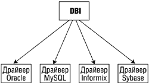
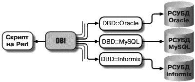
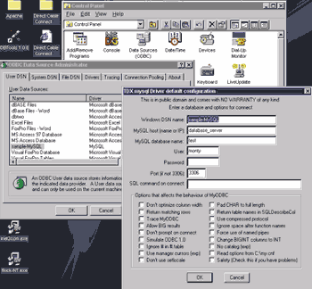
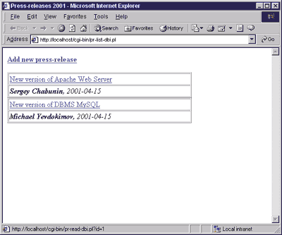

Динамический веб-сайт
Изо дня в день работая над обновлением содержимого своего
Web-сайта, насыщая его интересными материалами, вы, вероятно, задумываетесь о
том, что ежедневно создаются сотни новых Web-сайтов, которые также ежедневно
пополняются сотнями новых документов. Как создаются все эти новые массивы
страниц и каким образом они так быстро обновляются? Все это не так сложно, как
кажется на первый взгляд, поскольку здесь используется концепция динамических
Web-страниц.
В этой статье мы рассмотрим этапы создания механизма публикации
на Web-сайте пресс-релизов. Наш сайт будет соединять <на лету> пресс-релизы,
хранящиеся в базе данных, с шаблонными Web-страницами. Мы не ставили целью
ознакомить читателей с основами средств разработки Web-сайтов, поскольку об этом
написано множество книг и статей. Данная статья предназначена в основном для тех
пользователей, которые уже имеют опыт создания Web-страниц и простых сайтов.
Наша главная цель - показать, как начать разрабатывать свой первый динамический
Web-сайт. Для понимания статьи желательно иметь базовые знания об архитектурах
информационных систем, о языке разметки гипертекста (HTML) и языке
программирования Perl . Для создания этого сайта мы воспользуемся тремя мощными
открытыми технологиями: Apache, MySQL и Perl/DBI.
Что такое статический Web-сайт?
Перед тем, как погрузиться в разработку динамического
Web-сайта, важно понять, что представляют собой статический Web-сайт и
статические Web-страницы, составляющие его основу. Статические Web-страницы
создаются вручную, потом сохраняются и загружаются на сайт. Всякий раз, когда
требуется изменить содержимое такой страницы, пользователь модифицирует ее на
своем рабочем компьютере, применяя, как правило, HTML-редактор, сохраняет ее и
затем заново загружает на Web-сайт. Внимательно присмотревшись к какому-нибудь
порталу, допустим к CNN.com или BBC.co.uk, можно подумать, что для обновления
содержимого своих сайтов эти компании привлекают армию верстальщиков. На самом
же деле существует лучший способ - использование концепции динамического
Web-сайта.
Что такое динамический Web-сайт?
Каждая отображаемая страница динамических Web-сайтов основана
на шаблонной странице, в которую вставляется постоянно меняющееся информационное
наполнение, которое обычно хранится в базе данных. Когда пользователь
запрашивает страницу, соответствующая информация извлекается из базы,
вставляется в шаблон, образуя новую Web-страницу, и пересылается Web-сервером в
пользовательский браузер, который и отображает ее должным образом. Кроме
информационного наполнения, динамически могут создаваться также и элементы
навигации по Web-сайту. Таким образом, если вам нужно обновить содержимое своего
сайта, вы просто добавляете текст для новой страницы, который затем вставляется
в базу данных с помощью определенного механизма. В результате получается, что
Web-сайт как бы сам себя обновляет.
Почему динамические сайты лучше
Сразу после того как динамический сайт создан и запущен в
работу, начинают проявляться его преимущества. Теперь в вашем распоряжении
имеется сравнительно небольшое количество шаблонных страниц, с помощью которых
генерируются сотни, а может быть, и тысячи Web-страниц. Вид (дизайн) сайта может
быть легко изменен с помощью модификации этих шаблонов. Изменение содержимого
базы данных можно производить через Web-интерфейс с использованием HTML-формы,
не вторгаясь при этом в технические детали каждой специфической СУБД.
Создание динамического сайта
Первое, что нужно для создания динамического сайта, - это
Web-сервер, например Apache.
Web-сервер может использоваться для обслуживания электронного
магазина, сервера новостей, поискового механизма, системы дистанционного
обучения и даже для всей совокупности перечисленных сфер. Выбор Web-сервера
зависит от того, каким видом деятельности частное лицо или организация
собирается заниматься в Интернете.
Немногие из принимаемых в бизнесе стратегических решений столь
же значимы, как выбор платформы для Web-сервера. Характеристики сервера - это
чрезвычайно важный фактор, определяющий надежность узла, его <отзывчивость> на
запросы клиентов, а также то, какие усилия необходимо предпринимать для
поддержания его в рабочем состоянии. При правильном выборе компонентов и
качественном проекте Web-узел может стать для клиентов и партнеров новым, более
удобным способом взаимодействия с вашей компанией. Перегрузка Web-сервера может
привести к тому, что сервер баз данных или какой-либо иной ресурс станет
недоступным для клиентов.
Крупные компании до недавнего времени делали ставки на
Microsoft Internet Information Server, Netscape FastTrack, IBM WebSphere, а
Apache в основном использовался небольшими компаниями. Однако сейчас ситуация
несколько изменилась, и Apache начинает поддерживать работоспособность некоторых
крупных Интернет-проектов, в частности Yahoo.
Полную версию статьи вы можете найти на нашем CD-ROM.
Apache предоставляет богатые возможности, позволяющие настроить
Web-сервер в соответствии с потребностями индивидуальных и корпоративных
пользователей. Настройка производится с помощью директив, содержащихся в
конфигурационных файлах. Apache позволяет создавать виртуальные Web-узлы, а
также выполняет функции proxy-сервера. Если нужно предоставить доступ к
содержимому сервера лишь ограниченному кругу лиц, Web-сервер можно настроить
так, чтобы при обращении к указанным каталогам сервер проверял регистрационные
имена и пароли в собственной или в одной из подключенных к нему баз данных.
Далее вам нужно решить, как вы собираетесь хранить
информационное наполнение (контент), которое отображается на Web-странице. В
данной статье на конкретном примере мы покажем, как создать базу данных в СУБД
MySQL, которая позволит нам разбить Web-контент на таблицы, содержащие поля и
записи с данными. Поле - это дискретная единица данных в таблице. Например, мы
можем создать таблицу tbl_news_items с полями col_title, col_date,
col_fullstory, col_author. СУБД MySQL - отличный выбор для создания такой базы
данных вследствие простоты в использовании и администрировании, свободной
распространяемости для разных платформ, включая Linux и Windows, и быстро
растущей популярности.
После этого мы создадим динамические шаблонные страницы на
HTML. Чтобы разработать приложения для взаимодействия с базой данных и
шаблонами, мы воспользуемся языком Perl.
На самом деле нам необходимо создать три Perl-программы, или
скрипта: один будет отображать ссылки на все имеющиеся пресс-релизы
(pr-list-dbi.pl), другой - содержимое выбранного пресс-релиза
(pr-content-dbi.pl), а третий позволит нам добавить свежий пресс-релиз в базу
данных (pr-add-dbi.pl). Работу по верстке можно возложить на любимый
HTML-редактор, например, Allaire HomeSite (http://www.allaire.com/). Только помните, что при создании
шаблона необходимо оставлять пустые области, в которые будет вставляться
динамическое наполнение (естественно, переменной длины).
После разработки общего дизайна для своих пресс-релизов просто
вставьте в указанные выше пустые области специальные ключевые слова (см. об этом
ниже). Как только пользователь запросит какой-либо пресс-релиз, Web-сервер
обработает Perl-код и заменит ключевые слова в шаблонах информационным
наполнением, извлеченным из базы данных, то есть каким-то конкретным
пресс-релизом.
И последнее, что нужно сделать, - загрузить ваши шаблоны на
Web-сервер в определенные директории. Можно воспользоваться FTP-клиентом CuteFTP
(http://www.cuteftp.com/),
но мы предпочитаем использовать файловую оболочку FAR. Две важные вещи, которые
следует запомнить: первое - файлы шаблонов должны содержать имена,
оканчивающиеся на .pl, и второе - они должны иметь право на выполнение (в
UNIX-системах надо выполнить команду chmod 0755 имя_шаблона.pl). Это все!
Добавление функциональности
Не представляет особых сложностей добавление функциональных
возможностей к механизму публикации пресс-релизов. Можно отсортировать ссылки на
доступные в базе данных пресс-релизы по дате или названию, группируя их по
годам. Или, например, вы захотите отобразить случайный пресс-релиз на вашей
Web-странице, время от времени предоставляя его информацию посетителям
независимо от того, когда он был реально опубликован. Но скорее всего самой
важной и полезной функциональностью будет добавление HTML-формы для ввода
содержимого пресс-релиза и разработки CGI-программы на Perl в целях обработки
этой формы и последующего размещения документа в базе данных. Напомним, что CGI
(Common Gateway Interface) - протокол, механизм, или формальное соглашение между
Web-сервером и отдельной программой. Сервер кодирует входные данные, например
HTML-формы, а программа CGI декодирует их и генерирует поток выходных данных. В
спецификации протокола ничего не сказано о каком-либо определенном языке
программирования. Поэтому программы, соответствующие этому протоколу, могут быть
написаны практически на любом языке - на C, C++, Visual Basic, Delphi, Tcl,
Python или, как в нашем случае, на Perl.
Подведем некоторые итоги. Надеемся, что эта статья поможет вам
оценить преимущества концепции динамических Web-страниц перед статическими.
Применение данной концепции приведет к сокращению ручной работы, поможет
распределить рабочую нагрузку сервера и позволит быстро увеличить количество
информационного наполнения сайта. Комбинация из Apache, MySQL и Perl предоставит
практически бесплатную, простую в использовании, гибкую в установке и настройке
кросс-платформенную и масштабируемую среду разработки. Здесь мы не будем
рассматривать особенности их установки, так как, во-первых, на это попросту не
хватит места, отведенного для данной статьи, а во-вторых, каждое из этих средств
поставляется вместе с весьма подробной документацией.
Создание базы данных в СУБД MySQL
Разработка модели базы данных
Первым и наиболее важным действием при создании базы данных
является разработка ее модели. Итак, приступаем.
Шаг 1
Нам нужно как-то назвать базу данных. Назовем ее db_website.
Шаг 2
Необходимо определить, что именно будут содержать таблицы базы
данных. В БД могут входить сотни таблиц. Сначала нам потребуется всего одна
таблица для хранения наших пресс-релизов. Назовем ее tbl_news_items.
Шаг 3
Следует определить поля, которые будет содержать наша таблица.
Эти поля будут являть собой все элементы пресс-релиза. В нашем примере
используются пять полей: col_id (числовой идентификатор пресс-релиза), col_title
(название), col_date (дата публикации), col_fullstory (содержимое), col_author
(имя автора). Поле col_id будет содержать уникальный идентификатор, по которому
пользователь сможет запрашивать содержимое определенного пресс-релиза.
Создание базы данных
Теперь нам необходимо установить соединение с СУБД MySQL и
создать нашу базу данных. Ниже мы покажем, как сделать это из командной строки.
Однако существует множество систем управления, или менеджеров СУБД MySQL,
которые позволяют администрировать ее, используя дружественный графический
интерфейс.
Прежде всего вам обязательно следует знать основы языка
запросов SQL (Structured Query Language). В поставку СУБД MySQL входит полное
описание поддерживаемой спецификации SQL. Этот язык несложен для постижения,
поскольку его операторы и их конструкции легко понять и запомнить. Для работы
вам потребуются операторы создания (CREATE или INSERT), выборки (SELECT) и
удаления (DROP или DELETE) данных, а также их изменения (UPDATE, MODIFY). В
конкретных примерах мы воспользуемся только некоторыми из них.
Чтобы не рассматривать установку пользовательских учетных
записей (user accounts) и назначение необходимых прав доступа, предположим, что
вы используете учетную запись администратора (root).
Шаг 1
Откройте терминальное окно (если вы работаете в графической
оболочке X Window ОС Linux или в ОС Windows 9x/NT/2000) и установите соединение
с СУБД MySQL, введя в командной строке mysql. В ответ вы должны получить
приглашение для ввода команд mysql>.
Шаг 2
Создадим нашу базу данных, введя:
CREATE DATABASE db_website;
После ввода каждой команды не забывайте печатать символ (;). Он очень важен,
поскольку посылает MySQL сигнал конца ввода команды.
Шаг 3
Далее необходимо послать команду, указывающую системе MySQL, какую конкретно
базу данных мы собираемся использовать. Введите:
use db_website;
Шаг 4
Создадим таблицу tbl_news_items, где определим тип данных, которые будут
храниться в ее полях. Введите:
1. CREATE TABLE tbl_news_items (
2. col_id INT NOT NULL AUTO_INCREMENT PRIMARY KEY,
3. col_title VARCHAR(100),
4. col_author VARCHAR(100),
5. col_body TEXT,
6. col_date DATE
7. );
Шаг 5
Теперь, когда мы создали таблицу для хранения наших данных, нам
нужно заполнить ее какими-то примерными данными. Заметьте, что в нижеследующей
команде мы не будем определять поле col_id, потому что оно заполняется
автоматически по мере добавления новых данных. Также имейте в виду, что
синтаксис для даты - <год/месяц/день>. Итак, в командной строке mysql>
введите следующую команду.
8. INSERT INTO tbl_news_items (col_title, _
col_author, col_body, col_date)
9. VALUES (
10. 'Мой первый пресс-релиз',
11. 'Ваше Имя',
12. 'Этот пресс-релиз хранится в БД MySQL',
13. '2001/4/15'
14. );
Введите еще несколько подобных запросов для вставки. Чтобы
просмотреть то, что хранится в базе данных, в командной строке mysql>
введите:
SELECT * FROM tbl_news_items;
Создание динамических Web-страниц на Perl
Подготовка к работе
Для запуска Perl-программ понадобится интерпретатор Perl версии
5.005 или 5.6 дистрибутивов Perl Standard или ActiveState Perl для UNIX или
Win32. Если вы будете заниматься разработкой приложений для функционирования под
Win32, то пакет от ActiveState несколько удобнее в использовании, к тому же в
него входит утилита PPM для установки дополнительных модулей.
Для организации взаимодействия наших Perl-программ с СУБД MySQL
необходимо, чтобы в поставку Perl входил модуль DBI. Поскольку модуль в основном
ничего сам не делает, а перекладывает все операции по взаимодействию с базами
данных на соответствующий им драйвер, то требуется установка библиотеки
DBD-Mysql (драйвер к БД MySQL для модуля DBI). Как заявил Тим Бьюнс (Tim Bunce),
автор и разработчик указанного модуля, .
Концепция драйверов баз данных весьма удобна, поскольку в своем
Perl-приложении вы используете стандартные для DBI вызовы, которые затем
переадресуются модули соответствующему драйверу, а тот, в свою очередь, уже
напрямую будет взаимодействовать с БД, не требуя от вас изучения технических
особенностей каждой конкретной СУБД. Таким образом, существуют драйверы
DBD::Sybase, DBD::Oracle, DBD::Informix и т.д. (рис. 1, 2).

Рис. 1. Архитектура DBI

Рис. 2. Поток данных через интерфейс DBI
Немного выйдем за рамки тематики статьи. Допустим, что в
поставку DBI не входит драйвер для специфической СУБД. В данном случае на помощь
придет мост DBD-ODBC. Достаточно создать новый источник данных (Data Source
Name) для драйвера ODBC (Open DataBase Connectivity), где нужно выбрать тип этой
СУБД, адрес хоста, по которому надо установить соединение, имя базы данных и
авторизационные данные, то есть имя пользователя и пароль (рис. 3). И затем,
используя модуль DBI, взаимодействовать с базой данных. Кроме того, как правило,
в стандартную поставку ActiveState Perl входит модуль Win32::ODBC (Win32-ODBC).
Работа с ним немного отличается от работы с DBI, но в целом очень похожа.
Разница лишь в том, что Win32::ODBC - модуль только для Win32-систем и позволяет
работать с <родными> функциями ODBC более эффективно, чем DBD::ODBC.

Рис. 3. Добавление нового источника данных через
ODBC-администратор
Между ODBC и DBI можно провести параллель. DBI - это аналог
ODBC Administrator (менеджера драйверов баз данных). Каждый DBD-драйвер по своим
функциям соответствует ODBC-драйверу. Может смутить лишь тот факт, что
существует, как говорилось выше, драйвер DBD::ODBC. Но он всего лишь позволяет
установить связь DBI с ODBC-драйверами.
Для установки DBI и DBD-Mysql, с помощью утилиты PPM в среде
Win32 введите в командной строке:
ppm install DBI
Обратите внимание, что в этот момент ваш компьютер должен быть
подключен к Интернету. Если же соответствующий модуль имеется у вас на локальном
диске, воспользуйтесь справочной информацией, введя команду:
ppm help install
Для пользователей UNIX-систем установка модуля DBI будет
проходить практически так же, как и установка других Perl-модулей:
tar -zxvf DBI-1.06.tar.gz
cd DBI-1.06/
perl Makefile.PL
make
make test
make install
Можно также воспользоваться оболочкой CPAN. Если же на вашем
компьютере установлена UNIX-версия пакета от ActiveState, то можно работать и с
установочной утилитой PPM. Иногда бывает, что оболочки CPAN и PPM не
функционируют, если в сети предприятия, к которой подключен ваш компьютер,
установлен брандмауэр, или сетевой экран (firewall). В данном случае вам помогут
только модули с исходными текстами, загруженные вручную. Для их установки и
подключения к Perl или Apache потребуется интерпретатор Perl, компилятор C/C++
или GCC/PGCC и какая-либо из утилит-сборщиков make (из поставки одного из клонов
UNIX, а также Microsoft Visual C++), nmake или dmake. Таким образом, процедура
установки модулей несколько усложняется. Почти с каждым из них поставляется
документация по <сборке>, благодаря которой у вас не должно возникнуть особых
трудностей.
Вывод списка статей
Теперь, когда у вас есть работающая база данных с
пресс-релизами, можно без особых проблем подключить ее к Web-странице. Начнем с
создания простейшей страницы, которая отображает список всех имеющихся
пресс-релизов. Заметьте, что по умолчанию Web-сервер Apache <думаеть>, что все
ваши документы должны находится в его директории htdocs, а исполняемые файлы - в
cgi-bin. Следовательно, необходимо поместить все файлы с расширением .pl в
каталог cgi-bin. В свою очередь, создаваемые файлы HTML-шаблонов нужно
разместить в каталоге tpl. Иерархия каталогов будет выглядеть следующим образом:
/ (корень любого диска)
/local
/local/usr
/local/usr/bin
/local/usr/cgi-bin
/local/usr/htdocs
/local/usr/tpl
Для систем DOS/Windows путь к cgi-bin может выглядеть так:
c:\local\usr\cgi-bin
Шаг 1
Используя свой любимый текстовый редактор, создайте файл pr-list-tpl.htm:
15. <html>
16. <head>
17. <title>Пресс-релизы 2001</title>
18. </head>
19. <body>
20. @BLOCK@
21. </body>
22. </html>
Этот файл предназначен для отображения списка всех доступных
пресс-релизов.
Шаг 2
Создайте файл pr-list-block-tpl.htm, который будет отображать
каждый блок с найденным пресс-релизом в виде таблицы:
23. <table border="1" width="400" cellpadding= _
"2" cellspacing="1">
24. <tr><td width="400"><a href= _
"/cgi-bin/@READ@?id=@NUMBER@">@TITLE@</a></td></tr>
25. <tr><td width="400"><i><b>@AUTHOR@</b>, _
@DATE@</i></td></tr>
26. </table>
Шаг 3
Создайте файл pr-content-tpl.htm, который будет отображать
содержание пресс-релиза:
27. <html>
28. <head>
29. <title>Press-releases 2001: @TITLE@</title>
30. </head>
31. <body>
32. <h2>@TITLE@</h2>
33. <table>
34. <tr><th align="left">@TITLE@</th></tr>
35. <tr><td><i>Author: <b>@AUTHOR@</b> Date: @DATE@</i></td></tr>
36. <tr><td>@BODY@</td></tr>
37. </table>
38. <a href="/cgi-bin/@LIST@">Show the list of press-releases..</a>
39. </body>
40. </html>
Шаг 4
Создайте Perl-скрипт pr-list-dbi.pl, который будет читать
данные из базы данных db_website и, используя шаблонные HTML-файлы, отображать
список пресс-релизов (текст этого скрипта вы сможете найти на нашем
компакт-диске).
А теперь пройдемся по листингу кода и рассмотрим, как работает
программа вывода списка пресс-релизов.
Строки 1-9 представляют собой как бы инициализирующий блок, в
котором объявляются все глобальные переменные и константы:
41. #!/local/usr/bin/perl
42.
43. use DBI;
44. $dbh = DBI->connect('dbi:mysql:db_website','root','');
45. $path = "/local/usr/tpl";
46. $TPL_LIST = "$path/pr-list-tpl.htm";
47. $TPL_LIST_BLOCK = "$path/pr-list-block-tpl.htm";
48.
49. print "Content-type:text/html\n\n";
Сперва мы сообщаем Web-серверу Apache путь, указывающий, где
находится интерпретатор Perl, который запускается при запросе скрипта, проверяет
его на ошибки и затем выполняет его. Далее мы объявляем модуль DBI (DataBase
Interface), методы которого будут использоваться в программе для взаимодействия
с базой данных (строка 3). Затем мы устанавливаем соединение с нашей базой
данных db_website (4), указывая в качестве входного имени пользователя root
(администратор), а в качестве пароля пустую строку (значение, принятое по
умолчанию). В переменной $path указываем путь, по которому находятся файлы
HTML-шаблонов (5). В переменных $TPL_LIST и $TPL_LIST_BLOCK соответственно
указываем их имена (6, 7). Потом, сообщаем Web-серверу, что все исходящие данные
должны представляться в MIME-формате text/html для вывода HTML-потока в
пользовательский браузер (9).
Строки 11-22 представляют собой тело программы:
50.
51. open (L, "$TPL_LIST");
52. while ($line1=<L>) {
53. chomp($line1);
54. if ($line1=~/\@BLOCK\@/) {
55. read_db();
56. ins_data();
57. } else {
58. print "$line1\n";
59. }
60. }
61. close(L);
62.
63. $dbh->disconnect;
Открываем файл-шаблон pr-list-tpl.htm (11) и в цикле (12-20)
просматриваем его, записывая каждую считанную строку в переменную $line. Во
время каждой итерации производим проверку на наличие в этой строке ключевого
слова @BLOCK@ (14-19), означающего, что в данном месте надо вставить блок с
пресс-релизом. Как только оно найдено, вызываем процедуры read_db() и
ins_data().
Строки 26-39 - тело процедуры read_db(), предназначенной для
считывания содержимого таблицы tbl_news_items, в которой хранятся наши
пресс-релизы:
64.
65.
66. sub read_db {
67. $c=0;
68. my($sql) = "SELECT * FROM tbl_news_items";
69. $rs = $dbh->prepare($sql);
70. $rs->execute;
71. while (my $ref = $rs->fetchrow_hashref()) {
72. $id[$c] = "$ref->{'col_id'}";
73. $title[$c] = "$ref->{'col_title'}";
74. $author[$c] = "$ref->{'col_author'}";
75. $date[$c] = "$ref->{'col_date'}";
76. $c++;
77. }
78. $rs->finish();
79. }
Инициализируем счетчик $c=0, составляем запрос выборки всех
данных из таблицы (28), выполняем запрос (29, 30) и получаем данные в рекордсет
(recordset - набор записей) $rs. Затем в цикле (31-37) извлекаем данные из
рекордсета, используя метод fetshrow_hashref и возвращая ссылку на ассоциативный
массив %ref (31), содержащий имена и значения полей текущей записи. Записываем
извлеченные данные (32-35) в соответствующие их типам обычные массивы @id,
@title, @author и @date. Закрываем рекордсет (38).
Строки 41-53 - тело процедуры ins_data(), реализующей вставку
извлеченных из БД данных в исходящий поток данных; строки 55-63 - тело процедуры
pr_block(), вызываемой в цикле из процедуры ins_data():
80.
81. sub ins_data {
82. $toread = "pr-read-dbi.pl";
83. for ($i=0; $i<$c; $i++) {
84. $line = &pr_block;
85.
86. $line =~ s/\@NUMBER\@/$id[$i]/;
87. $line =~ s/\@TITLE\@/$title[$i]/;
88. $line =~ s/\@AUTHOR\@/$author[$i]/;
89. $line =~ s/\@DATE\@/$date[$i]/;
90. $line =~ s/\@READ\@/$toread/;
91. print "$line";
92. }
93. }
94.
95. sub pr_block {
96. my($block) = '';
97. open (B, "$TPL_LIST_BLOCK");
98. while ($line=<B>) {
99. $block = $block.$line;
100. }
101. close(B);
102. return ($block);
103. }
Итак, получив в результате выполнения процедуры read_db()
максимальное значение счетчика $c, в цикле (43-52) мы запускаем процедуру
pr_block(), которая читает содержимое HTML-шаблона pr-list-block-tpl.htm и
записывает его в переменную $block (59), значение которой затем возвращается
(62) в переменную $line (44) процедуры ins_data(). Далее в этом же цикле мы
заменяем (46-50) найденные в исходящем потоке $line ключевые слова @NUMBER@,
@TITLE@, @AUTHOR@, @DATE@, @READ@ на соответствующие данной итерации цикла ($i)
значения массивов @id, @title, @author, @date и переменной $toread.
Вывод текста пресс-релиза
После того как мы вывели список всех имеющихся в базе данных
пресс-релизов (рис. 4), нужно дать пользователю возможность просмотреть текст
какого-нибудь из них (соответствующий скрипт вы также сможете найти на нашем
компакт-диске).

Рис. 4.
Новый скрипт pr-read-dbi.pl будет незначительно отличаться от
уже созданного нами pr-list-dbi.pl.
Данный листинг на 98% походит на листинг 1, хотя, имеет
некоторые незначительные отличия:
- подключена библиотека CGI для считывания параметра id (9) из строки
запроса (например, http://localhost/cgi-bin/pr-content-dbi.pl?id=1);
- применяется всего один HTML-шаблон (pr-content-tpl.htm);
- запрос к базе данных дополнен условным SQL-оператором WHERE для выборки
всех данных, соответствующих определенному пресс-релизу по идентификатору
col_id;
- из БД также считывается поле col_body с текстом выбранного пресс-релиза.
Создание нового пресс-релиза
Расширим функциональность нашей системы, добавив возможность
создания новых пресс-релизов, без необходимости непосредственной работы с базой
данных для пополнения таблицы tbl_news_items новой информацией.
Итак, новая Perl-программа (которая, как и предыдущие две,
находится на компакт-диске) будет отличаться от предыдущих прежде всего тем, что
предназначена не для отображения данных, а для их добавления в БД.
Следовательно, мы должны несколько изменить часть, отвечающую за взаимодействие
с БД, применив SQL-запрос INSERT и соответствующие ему операторы модуля DBI.
Строки 12-18 - это тело основной программы:
12. if ($cmd ne "add") {
13. &show_form;
14. } else {
15. $dbh = DBI->connect('dbi:mysql:db_website', _
'root','');
16. &add_pr;
17. dbh->disconnect;
18. }
Здесь мы проверяем, поступила ли команда на добавление
пресс-релиза в базу данных. Как только она поступила, устанавливаем соединение с
БД (15), выполняем подпрограмму app_pr() (16) и завершаем соединение (17). Если
же команды не было, то просто отображаем форму заполнения (13) для данных
пресс-релиза - процедура show_form().
Строки 20-36 - это тело процедуры добавления пресс-релиза
pr_add():
19.
20. sub add_pr {
21. $title = $q->param("pr_title");
22. $author = $q->param("pr_author");
23. $body = $q->param("pr_body");
24. $body =~ s/\r\n/<br>/g;
25.
26. my($sql) = "INSERT INTO tbl_news_items
(col_title,col_author,col_body,col_date)
VALUES (\'$title\',\'$author\',\'$body\',CURDATE())";
27. $rs = $dbh->do($sql);
28.
29. if ($@) {
30. $rc = $dbh->rollback;
31. } else {
32. $rc = $dbh->commit;
33. }
34.
35. print "Location: /cgi-bin/pr-list-dbi.pl\n\n";
36. }
Сперва обрабатываем данные формы (22-25), составляем SQL-запрос (27) и
выполняем его (27) с помощью DBI-метода $dbh->do(). Поскольку здесь
производится процедура вставки данных в БД, то нужно позаботиться о возможности
отмены операции в случае сбоев. Для этого мы вставили код отмены транзакции и
отката в предыдущее состояние (30-34). При сбое при выполнении $dbh->do()
отменяем сделанные изменения (31). Если же сбоя не произошло, то подтверждаем
сделанные изменения (33). Далее после всех действий просто переходим на страницу
со списком всех пресс-релизов (36).
Строки 37-55 - это тело процедуры вывода формы для ввода информации о новом
пресс-релизе (используется HTML-шаблон, имя которого задано в переменной
$TPL_INSERT, pr-add-tpl.htm):
37.
38. sub show_form {
39. print "Content-type:text/html\n\n";
40.
41. open (L, "$TPL_INSERT");
42. while ($line=<L>) {
43. chomp($line);
44. if ($line=~/\@/) {
45. if ($line=~/\@ADD\@/) {
46. $toadd = "pr-add-dbi.pl";
47. $line =~ s/\@ADD\@/$toadd/;
48. } else {
49. $tolist = "pr-list-dbi.pl";
50. $line =~ s/\@LIST\@/$tolist/;
51. }
52. }
53. print "$line\n";
54. }
55. close(L);
Перегрузка системы
Поскольку вы разрабатываете динамический Web-сайт, то
соответственно количество информации на нем может расти весьма быстро. Кроме
того, по мере роста популярности вашего ресурса растет и число его посетителей,
что может привести к перегрузкам сервера, то есть к понижению производительности
системы. Перед тем как начать поиски путей увеличения мощности аппаратных
средств и пытаться найти конфигурацию новой системы, можно попробовать устранить
одну из возможных причин чрезмерного потребления оперативной памяти. Виновником
может оказаться тот же Perl. Дело в том, что каждый раз при обращении к тому или
иному Perl-скрипту, Web-сервер загружает интерпретатор в оперативную память (он
занимает от 500-1000 Кбайт на жестком диске), а последний разбирает программу от
начала до конца в поисках синтаксических ошибок. После этого он вновь читает ее,
инициализируя переменные и функции, считывает вводимые данные (параметры),
обрабатывает и возвращает результаты. Представляете, что происходит, если
одновременно пресс-релизы хотят просмотреть сотни посетителей вашего сайта?
Для ускорения этого процесса созданы специальные решения,
представляющие собой дополнительные модули для Web-сервера Apache - mod_fastcgi
и mod_perl.
Модуль FastCGI (mod_fastcgi) предполагает широкое применение
средств обмена данными между работающими процессами (задачами) операционной
системы. В начале своей работы Web-сервер активирует CGI-программу и оставляет
эту программу и несколько ее копий работающими в фоновом режиме. Любые запросы к
программе будут просто переданы уже активным копиям, что избавит сервер от
дополнительной нагрузки, связанной с повторной активацией процесса.
Модуль mod_perl позволяет загрузить Perl в оперативную память в
то же адресное пространство, что и сам Web-сервер Apache, и оставить Perl в
памяти до завершения работы последнего, не позволяя загружать очередную копию
интерпретатора при обращении к CGI-программе. Этот модуль применяется чаще, чем
FastCGI, поскольку не требует никаких изменений в программе.
Дополнительная информаци
Apache
Apache позиционируется на рынке как мощный и гибкий Web-сервер, совместимый
со стандартом HTTP/1.1. Примерно 60% всех Web-серверов в Интернете функционируют
под управлением Apache. Функциональность Apache можно легко увеличить, установив
свободно распространяемые модули расширения. Исходные коды этого Web-сервера
доступны практически для любой платформы. Еще одной его полезной особенностью
является тот факт, что Apache позволяет работать с множеством языков
программирования, а также загружать некоторые из них в свое адресное
пространство, увеличивая таким образом скорость взаимодействия
Интернет-пользователя с системой.
MySQL
MySQL - кросс-платформенная система управления реляционными базами данных
(RDBMS, Relational DataBase Management System) с использованием языка запросов
SQL (Structured Query Language). Сначала MySQL, как и Apache и даже Perl,
выпускалась только в версии для UNIX-систем, поэтому до сих пор сохраняет
интерфейс командной строки. Однако за последнее время выпущено огромное
количество графических менеджеров, которые облегчают задачи администрирования.
Кроме того, в поставку MySQL для Linux и Windows входит менеджер, графический
интерфейс которого схож с тем, что использует оконный менеджер KDE в оболочке X
Window ОС Linux.
Perl, или PERL
PERL (Practical Extraction and Report Language) - язык, который был
разработан главным образом для синтаксической обработки текста. Однако в
последние несколько лет благодаря новым и модулям расширения, он применяется не
только как текстовый обработчик, но и как мощный инструмент разработки
Интернет/Интранет-приложений и Web-роботов. Интерпретатор Perl поставляется, как
правило, вместе с исходными кодами, которые могут быть скомпилированы
практически на любой платформе - DOS, OS/2, UNIX или Windows.
Полезные ссылки
Apache:
http://www.apache.ru/
http://apache.lexa.ru/
http://www.apache.org/
MySQL:
http://www.mysql.com/
http://www.mysql.ru/
Perl:
http://www.perl.org/
http://www.perl.com/
http://perl.oreilly.com/
http://www.activestate.com/
ftp://ftp.activestate.com/
http://www.cpan.org/
http://www.perl.ru/
Web-сайт автора:
http://cube.et.tudelft.nl/~maverick/dws/
http://www.webresearch.hut.ru/
http://www.webresearch.h1.ru/
Исходные тексты к статье с примерами использования библиотек DBI и
Win32::ODBC и шаблонные HTML-страницы: http://cube.et.tudelft.nl/~maverick/dws/